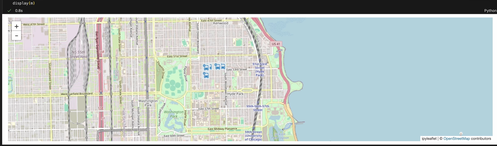
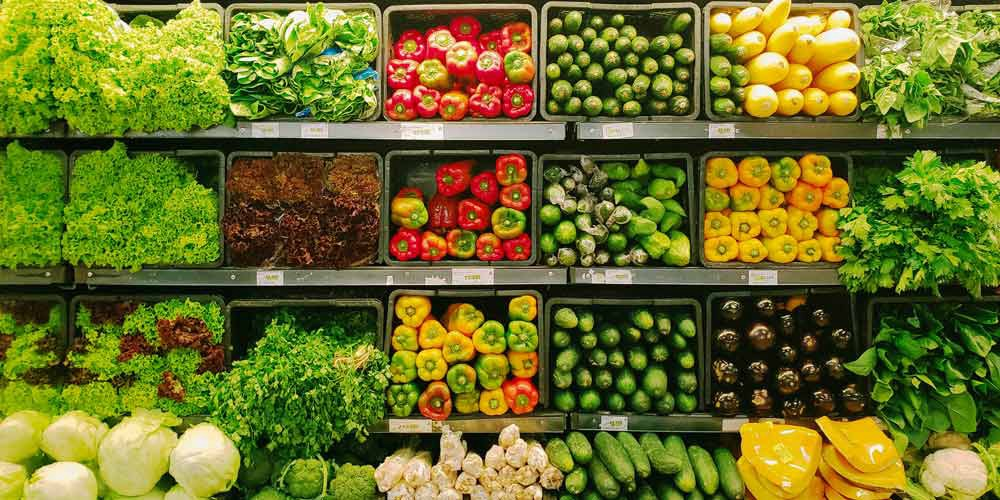

Portfolio
This Portfolio is a compilation of all the Data Science and Data Analysis projects I have done for academic, self-learning and hobby purposes. This portfolio also contains my achievements, skills, and certificates.
Python, PySpark Projects
Rent Prediction - OLS, XGBoost, LSTM
In this project for client Prudential Global Innovation Management, I built machine learning and deep learning models to predict rent prices for single-family and multi-family homes across Atlanta, SF, Boston, Dallas MSA(metropolitan statistical area). The code harnessses public data like the 1,400+ feature ACS, Redfin/Zillow market data, and proprietary Prudential data. Cleaned and engineered features, implemented PCA to reduce dimensionality. Utilized a 3-month sliding window to captured temporal trends. Models: LSTM reaching 45% R-squared and an OLS, RandomForest, an XGBoost with similar results, demonstrating the models' proficiency with limited available data. Deployed the RandomForest model in AWS Sagemaker using boto3

In this project I engineered an automated live bus tracking system in Python and Kafka, seamlessly integrating with the Chicago Transit Authority API. Processed and transmitted data from producer to consumer, providing dynamic visualizations of Chicago bus locations on a map for user-selected routes.
Instacart Market Basket Analysis - Association Mining

The objective of this project is to analyze the 3 million grocery orders from more than 200,000 Instacart users and predict which previously purchased item will be in user's next order. Customer segmentation and affinity analysis are also done to study user purchase patterns.
Chicago Food Inspections and Ratings
In this project I Leveraged PySpark to develop a machine learning model predicting restaurant ratings based on public inspection comments. The model pipeline combined text pre-processing (Tokenizer, HashingTF) with Logistic Regression, analyzing the Chicago Food Inspections dataset.
Automated Data Scraping using AirFlow's DAG
In this project I have developed an automated data scraper in Python to collect World Bank data at set intervals. Integrated the scraper with AirFlow's Directed Acyclic Graph (DAG) for efficient scheduling and execution.
Unemployment Analysis - NLP and Predictive Modelling
Developed a dynamic and interactive Shiny app with a Python backend to analyze and visualize monthly changes in economic indicators related to unemployment. The project incorporates several key elements:
Data Visualization: Users can explore interactive charts and graphs depicting key unemployment metrics, allowing for insightful trend analysis.
Sentiment Analysis: Leverages spaCy to extract sentiment from news articles and labor bureau reports, providing a deeper understanding of public and economic perspectives on unemployment.
Predictive Modeling: Users can input new reports and estimate future unemployment rates based on extracted sentiment and economic factors, empowering proactive decision-making.
R Projects - Program Evaluation, Research Methodology
CALBEARS - Determining Effect of Average Groundwater costs on Consumption
This project conducted on CALBEARS case focuses on understanding the impact of groundwater costs and electricity prices on groundwater consumption. Utilizing instrumental variable regression methodologies, particularly a two-stage least squares (2SLS) regression, the analysis aims to estimate causal effects.
Electricity Disconnection Impact Study
This project investigates the impact of electricity disconnection programs on payment behavior. Employing statistical methods and the potential outcomes framework, the study aims to estimate treatment effects, particularly the impact of disconnecting a household's electricity on household payments in rupees. The project repo, "impact-of-electricity-disconnects," includes code and documentation, discussing challenges in estimating treatment effects and the importance of differentiating between Intent to Treat (ITT) estimates and actual treatment effects.
Effect of Insurance on Farming Profits
The FIONA Impact Analysis Study focuses on assessing the impact of the FIONA program on farmer profits in India. The analysis validates assumptions such as common support and explores statistical approaches like regression adjustment and matching. Despite limitations in directly validating conditional independence, the study utilizes SOO approaches and demonstrates the statistical significance of the Average Treatment Effect (ATE) of FIONA on farmer profits. The project repo includes detailed information on assumptions, methodology, and recommendations based on the findings.